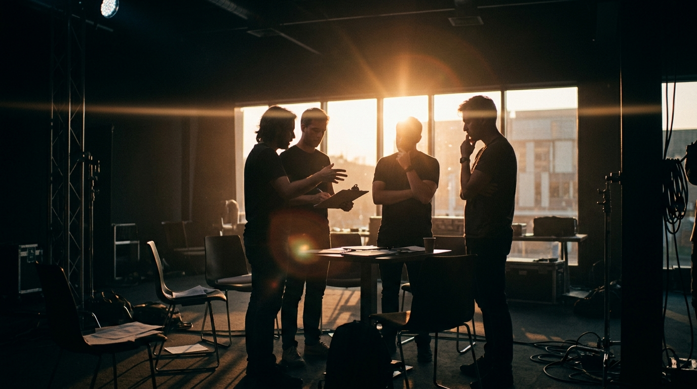
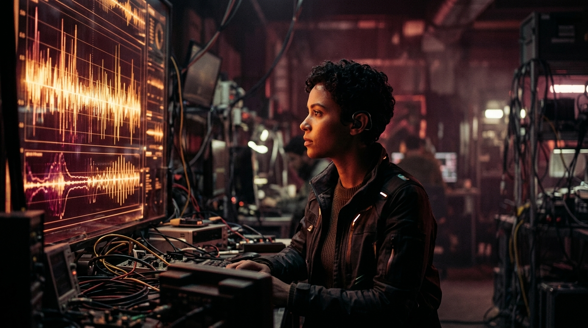

I LIKE BUILDING THINGS
THAT DIDN’T EXIST
YESTERDAY.
“Engineering provides the skeleton of the impossible. Video editing gives it breath. When the two collide, technology stops being an instrument and becomes a memory.”
AI ARCHITECTURE & APPLIED ML
Custom models, generative pipelines, predictive engines, and neural reasoning applied to tangible human problems.
CINEMATIC MONTAGE & VIDEO
Frame pacing, psychological cut points, color narrative, and rhythmic motion that holds human attention.
CREATIVE DIGITAL PRODUCTION
Independent freelancing, end-to-end prototypes, high-concept interactive narratives, and experimental web craft.
The conventional tech world treats engineering as an exercise in cold optimization. I treat it as an authorial medium. Long before training my first neural model, I was dissecting cut timings in timeline tracks—learning why three frames of silence can alter the psychological weight of a scene.
That sensory obsession carried directly into my engineering. Whether designing custom retrieval algorithms, fine-tuning classification networks, or choreographing high-performance digital interfaces, the question remains identical: does this move the person on the other side?
As a freelancer and engineer, I work with founders, artists, and teams who refuse ordinary templates. We build tools that think, stories that linger, and experiences that feel authored by human hands.
Curated for those who appreciate the space between pure code and pure cinema.
ENGINE
THE ENGINE
Stepping behind the viewport into the internal mechanics. Here, ideas are not styled—they are calculated, piped, stress-tested, and built to endure.
I build intelligent systems, connect data to decisions, and turn complex ideas into working products.
HOW I THINK ABOUT SYSTEMS
Every system is an intentional pipeline: transforming ambiguous entropy into deterministic, usable intelligence.
THE TECHNICAL STACK
PERSONAL AI CLOUD
A cloud-based AI workspace where users can upload documents and interact with their knowledge using retrieval-augmented generation.
BUSINESS GPT
Raw business data becomes understandable intelligence. Bridging the gap between tabular telemetry and executive decision-making.
FAIRNESS CANARY
AI systems need to be examined, not blindly trusted. Continuous telemetry for algorithmic bias, demographic parity, and predictive drift.
VERNACULAR OPS
Making business intelligence accessible to small business owners. Raw vernacular speech and unstructured invoices become structured operational action.
SYSTEMS DIRECTORY
PERSONAL AI CLOUD
RETRIEVAL-AUGMENTED GENERATION WORKSPACEPrivate knowledge retrieval engine supporting multi-modal document embeddings with zero data leakage.
BUSINESSGPT
INTELLIGENT TELEMETRY & NL-TO-SQL ENGINEAutomated telemetry translator turning messy operational records into executive predictive forecasting.
FAIRNESS-CANARY
ML BIAS MONITORING & ETHICAL AUDITINGReal-time guardrail daemon detecting disparate impact and demographic drift across live neural inferences.
VERNACULAR-OPS
MULTILINGUAL ASR TO INVENTORY ACTIONAudio ledger pipeline converting natural local language voice prompts into verified ERP supply actions.
BUILD SYSTEMS.
NOT FEATURES.
MAKE IT
USEFUL.
MAKE IT
UNDERSTANDABLE.
MAKE IT
LAST.
ENGINE
The machine has completed its calculation. The frame opens. Here, systems give way to pacing, keyframes, sound design, and the psychological architecture of moving images.
I DON’T
JUST EDIT
VIDEO.
I EDIT
RHYTHM.
I EDIT
ATTENTION.
I EDIT
STORY.
Every cut is an editorial transaction. A contract made with human perception.
THE EDITING TIMELINE
Vertical scroll scrubs the timeline horizontally. Every beat, sound cue, and transition is locked to a deliberate frame.
Cold Open · Establishing Silence
Rhythm Escalation · Sync Cuts
Dynamic Jump Cuts · Audio Hit
Cinematic Crescendo · Full Symphony
Fade to Black · Lasting Memory
FRAME BY FRAME
Pacing is determined in the microseconds between cuts. Three distinct frames from real assemblies.

Establishing lighting and silhouette tension before introducing the central character arc.
Tight dynamic framing designed to capture immediate human gaze in short-form mobile streams.

Atmospheric amber grade harmonizing optical waveforms with character conviction.
THAT’S THE WORK.
Every cut changes the meaning.
Every frame controls attention.
Every transition has a purpose.
THE LANGUAGE OF THE EDIT
RHYTHM CREATES MEANING.
SELECTED CUTS
Curated assemblies across campus documentary, brand narratives, and high-velocity short-form campaigns.
CAMPUS · UNCHARTED
Multi-camera event documentary edited with rhythmic cross-cutting, natural crowd ambience, and high-energy pacing.
NIGHT REVELS · THE SERIES
Fast-paced kinetic short form series engineered for high 3-second hook retention and rhythmic sound-beat alignment.
SILICON · SOUL
A high-concept brand narrative harmonizing optical waveforms with human technical resolve. Subtle slow-burn pacing.
EDITING IS TRANSFORMATION
Drag or touch the slider to reveal the delta between raw uncorrected log footage and the final master grade.
GOOD EDITING
IS INVISIBLE.
YOU DON’T NOTICE THE CUT.
YOU NOTICE THE STORY.
ALL OF IT
IS STORYTELLING.
Engineering provides the skeleton of the impossible. Video editing gives it breath. When the two collide, technology stops being an instrument and becomes a memory.
THE CUT
THE CREATOR
Systems calculate. Stories resonate. Here, the boundaries dissolve: engineering provides the skeleton, cinematic montage gives it breath, and creative direction turns it into a living product.
I DON’T CREATE IN ONE MEDIUM.
IDEA.
FROM THOUGHT TO THING
Every system, film, and interface progresses through five rigorous transformations.
THOUGHT
Pure curiosity. Identifying friction, framing the unmet need, and asking the question nobody phrased yet.
SKETCH
Translating intuition into spatial logic, user keyframes, and algorithmic pipelines on paper.
DESIGN
Typography hierarchy, rhythm of space, color grades, and micro-interactions that respect human attention.
CODE
FastAPI endpoints, vector index pipelines, reactive UI state, and performant GPU shaders.
PRODUCT
Deployed, stress-tested, and experienced by real users. Technology turned into an enduring memory.
THE CREATIVE STACK
MULTIMEDIA CANVAS
A cross-disciplinary sandbox where code, video keyframes, model weights, and design systems inhabit the same surface.
await idea.deploy({ scale: ∞ });
THE CONSTELLATION
Every initiative is an interconnected node. Systems, cinema, and interfaces converge toward a single author.
WHAT IF?
BUILD IT.
THE CREATIVE PROCESS
A continuous cycle of inquiry, deconstruction, and shipping.
QUESTION
Interrogating assumptions. Discovering why current patterns fail.
EXPLORE
Gathering disparate references across paper books, ML papers, and cinema.
BREAK
Stress-testing the concept until the weaknesses reveal themselves.
BUILD
Writing production pipelines and editing timelines with zero bloat.
REFINE
Frame precision, milliseconds of latency, and typography balance.
SHIP
Releasing to the world. Letting reality benchmark the artifact.